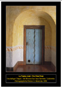
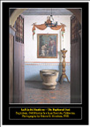

Exhibition MailerSan Juan Bautista: An Archaeologist's
View of an Early California Mission Mexican
Heritage Plaza, 1700 Alum Rock Avenue, San Jose, California -- July
9th through September 15th, 2002
Click on thumbnail to see full size version of
exhibition mailer:
 La
Puerta Azul - The Blue Door
Photo Copyright Ruben G. Mendoza,
1998
 La
Pila del Bautismo - The Baptismal Font
Photo Copyright Ruben G. Mendoza,
1998